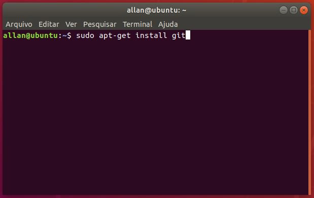
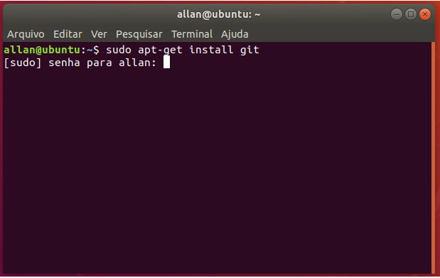
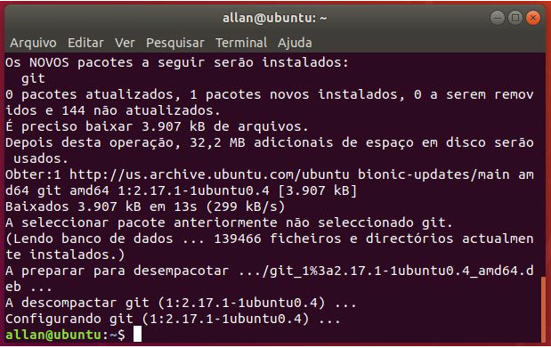

Instalação no Linux
Para instalar o GIT no Linux é simples basta seguir os passos à baixo:
- Abra o terminal do Linux e execute o seguinte comando. 
- Informe a senha do seu usuário, para liberar a instalação do GIT. 
- GIT instalado com sucesso! 
- Próximo passo, temos que configurar o GIT acesse: Configuração